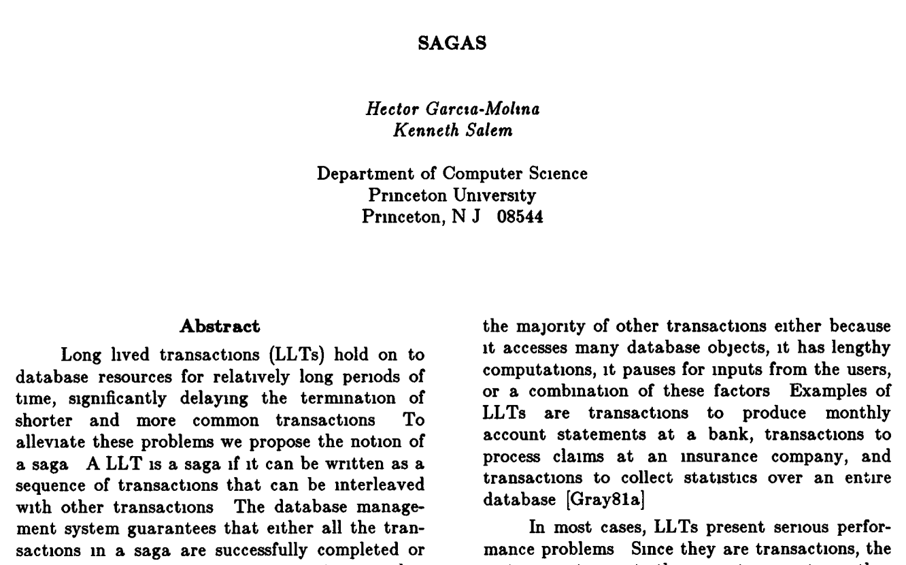
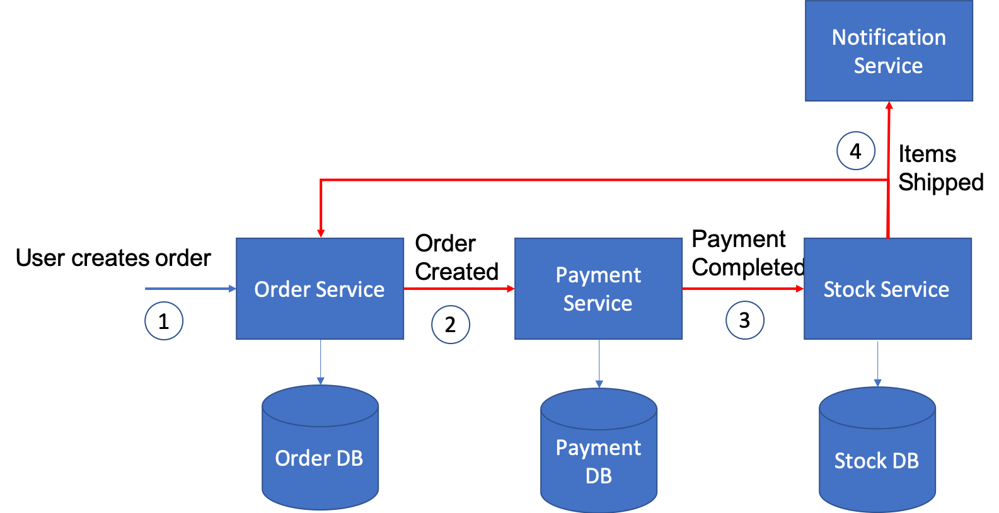
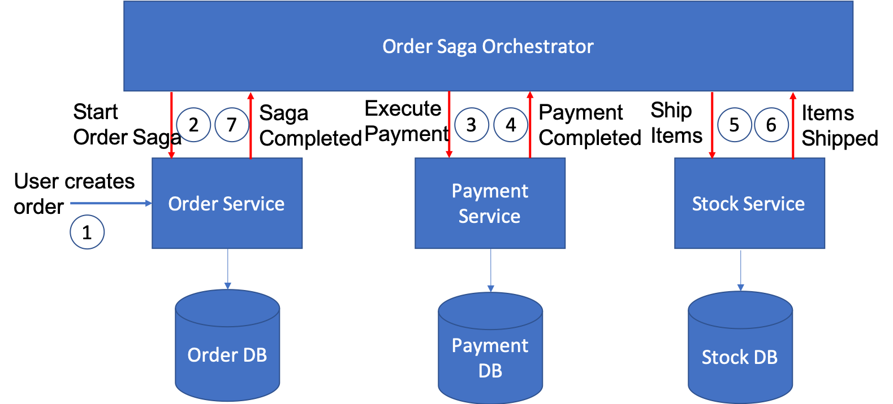

Prepared by Evrim Özçelik
It is a concept that a distributed database system can only have 2 of the following
In any networked shared-data systems partition tolerance is a must. Network partitions and dropped messages are a fact of life and must be handled appropriately.
The correct way to think about CAP is that in case of a network partition (a rare occurrence) one needs to choose between availability and consistency.
Many platforms provide transaction APIs (e.g. Asp.Net Core TransactionScope) which manage involved transactions with begin, commit, rollback methods.
Database transaction management capabilities can also be used to execute multiple commands on the same database.
During design time, eliminate transactional dependencies to other services as much as possible.
For example in an Order scenario, user’s last order time can be retrieved from Order micro service with an extra call instead adding another field to the User entity and update the value after user submits an order.
The following standards can be used:
Easy to understand, centrally managed
Immediate response to end user
2pc is synchronous (blocking)
Locks the object that will be changed before the transaction completes
First introduced in 1987 in an academic paper
A saga is a sequence of local transactions.
Each local transaction updates the database and publishes a message or event to trigger the next local transaction in the saga.
If a local transaction fails because it violates a business rule then the saga executes a series of compensating transactions that undo the changes that were made by the preceding local transactions.
Each local transaction publishes domain events that trigger local transactions in other services
An orchestrator (object) tells the participants what local transactions to execute
Events can be emitted over Message Queues or Databases
Routing capabilities of the Message Queues can be used to put the messages to the inbox queues of the related services
Mechanisms of ensuring that the system would be eventually consistent at some point in the future
By carefully considering all possible failure scenarios, we can ensure that our system would satisfy the conditions of eventual consistency
For example if one of the messages got lost, or some other failure happened, the Order microservice finds all non-completed orders by scheduled batch-processing and processes them
2PC is not an option because DB and MQ are different systems
https://microservices.io/patterns/data/saga.html
Developing Microservices with aggregates
Distributed Sagas: A Protocol for Coordinating Microservices